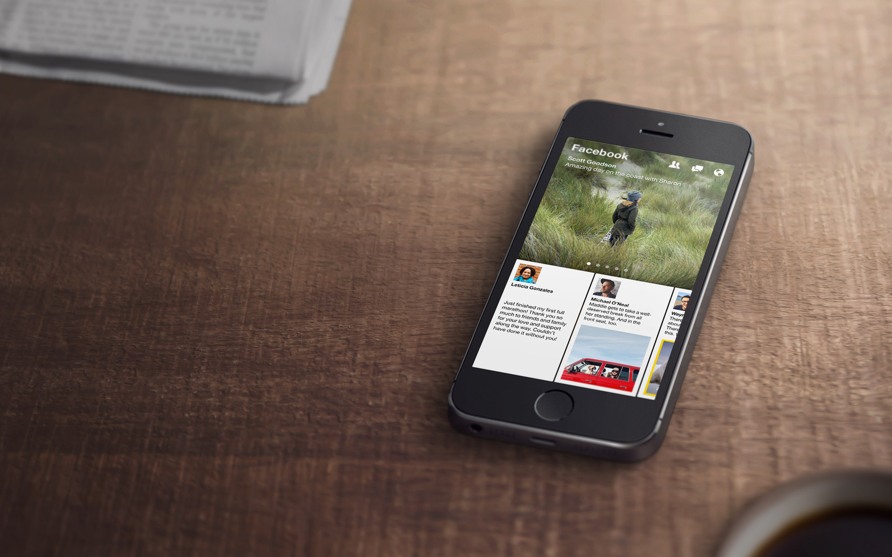

FOCUS, PATIENCE AND FACEBOOK’S ECONOMY OF SCALE:
Why Facebook Paper Might Not Be Dead on Arrival

FACEBOOK
This past February, Facebook launched “Facebook Paper,” a stand-alone app for consuming content from your Facebook News Feed, as well as from, other well curated sources. Paper was developed apart from the traditional Facebook app group in a new setting deemed “Facebook Creative Labs” and introduced many new user interactions along with a unique user interface, thus garnering quite a bit of attention amongst the press, design, and publishing communities. As an avid early adopter, I was asked to put together some thoughts on the app and its future prospects and to circulate those thoughts to the appropriate people at NatGeo. Over the past few months, my opinions on Paper have wavered in regard to a few minor details, but for the most part my opinions have remained the same.
Since February, I’ve had the opportunity to use Paper a fair amount, and while Twitter is still my go-to destination for news on mobile, I’m beginning to grow fond of the new interactions that Paper has introduced. The design is a welcome departure (or at least an alternative) to the way we’re used to experiencing Facebook on the iPhone. The design team under Mike Matas clearly spent a lot of time figuring out how they would like their reading experience on Facebook to be and it shows. The UI is beautiful and the interactions serve a clear purpose in improving the reading experience within the app. As a designer, I appreciate all of the thought that went into the interactions and know that they spent a serious amount of time in Quartz Composer to perfect the animations; but as a user, I’m conflicted.
While I appreciate the innovative and sleek design, I’m conflicted because I can’t figure out their intended audience is. As someone who’s always loved testing apps in search of inspiration for new interfaces and experiences, I know that if the UX isn’t intuitive the first time, it will be very difficult to convince the “everyday” user to open the app again. In fact, the first time I used Paper, the UX left me very confused; however, I gave it another chance because of all the press surrounding the app’s launch and was able to figure it out (it’s really awesome). Nevertheless, I still can’t identify Paper’s targeted audience. It’s definitely not my grandparents, since they don’t use Facebook on their phone, but at the same time the slick design almost feels “too mature” for the 12-18 demographic.
So, could it be the 19-35 demographic? Hypothetically, yes, as most of the Facebook team that built the app falls within this demographic. Also, I’d assume that this demographic is more likely to try out apps like Paper than others. But beyond the learning curve for users, Facebook Paper faces another problem. Most iPhone users within this demographic are likely already using of one of many content aggregators such as, Flipboard or Twitter; which makes convincing them to switch to Paper that much more difficult. They’re going to be competing against incumbents not only for App Store downloads, but also for repeat visits; which is never an easy feat, regardless of how amazing the product is. Ultimately, this will prove to be an interesting case study into companies with insane scale versus successful first movers with a singular product focus, like Flipboard.
With that being said, if anyone can pull off this type of app becoming more mainstream, it’s Facebook. Sometimes we forget that one of Facebook’s greatest strengths is its scale; it’ll always be easier to build an audience for their apps when they have over a billion users. Obviously there are exceptions to Facebook’s mobile success; like Facebook Poke, their Snapchat clone. But if just a small percentage of Facebook’s total audience were to use Paper, it's possible they could eclipse the amount of active Flipboard users.
There’s no doubt that the tech press has been quick to jump on Facebook with their “Move Fast and Break Things” motto for some of the strategic decisions they’ve made, but for a public company making design choices for over a billion users, their unbundling strategy is one of the more impressive ones I’ve seen in digital. It allows for trying new things like Facebook Paper and with their new ability to A/B test features and functionality in their apps without having to reapply to the App Store (which is a fairly big deal), they are able to constantly test improvements with a small percentage of their audience before officially rolling them out unlike most of their competitors.
More than anything, Paper’s biggest advantage might be time. They’re able to focus on having an amazing user experience and growing their user base without the pressures that come with being a startup. They don’t have to worry about their cash burn rate, nor do they have to think about “exit” strategies. Ultimately, I’m optimistic about the long term prospects for Facebook Paper because of the immensely talented team focused on Paper, as well as their ability to be patient and leverage Facebook’s economy of scale in making an incredible product.
If you’re interested in Facebook Paper’s gesture’s and UX, here are two great pieces:
Facebook Paper Design Details by Brian Lovin
Facebook Paper Gestures by Scott Hurff